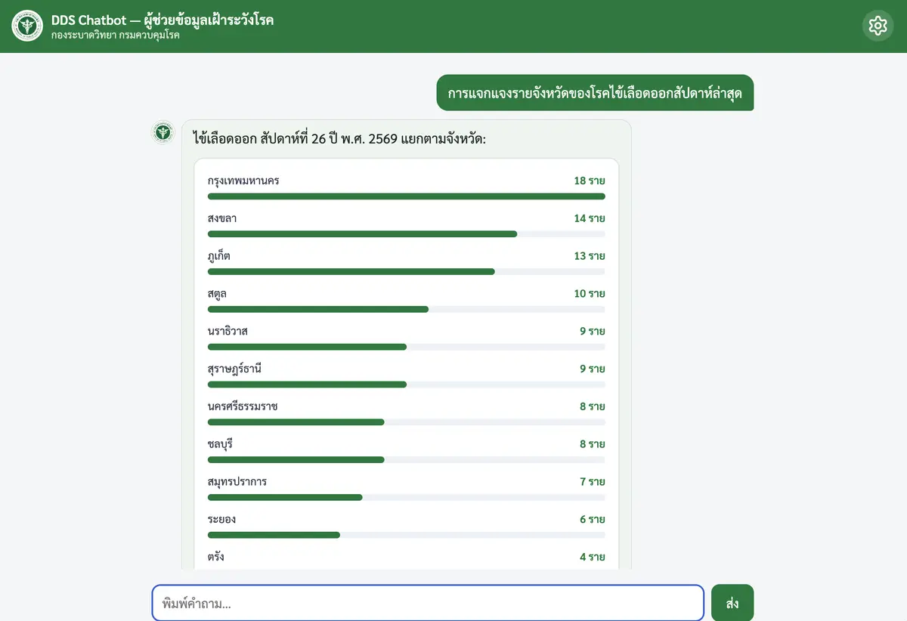
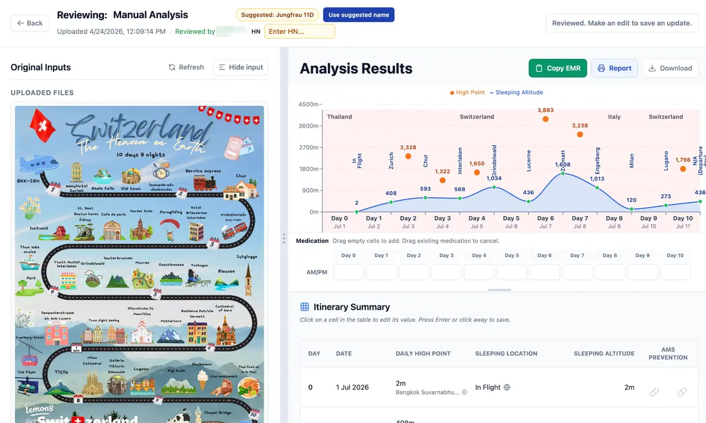
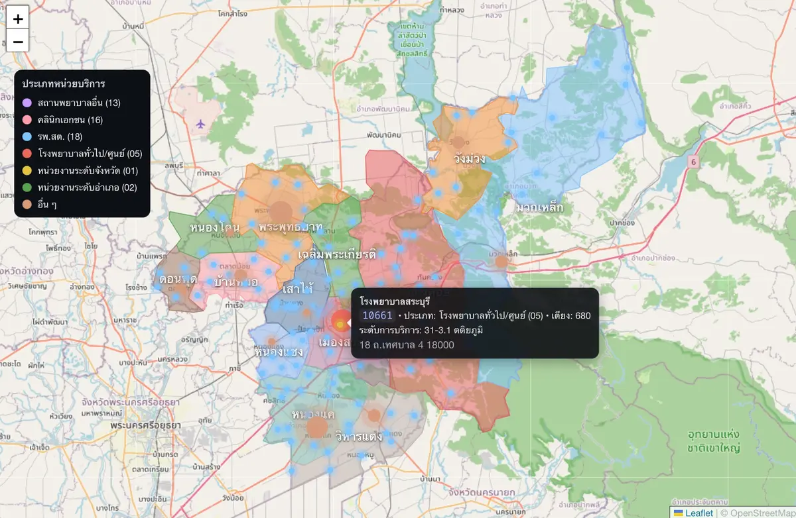
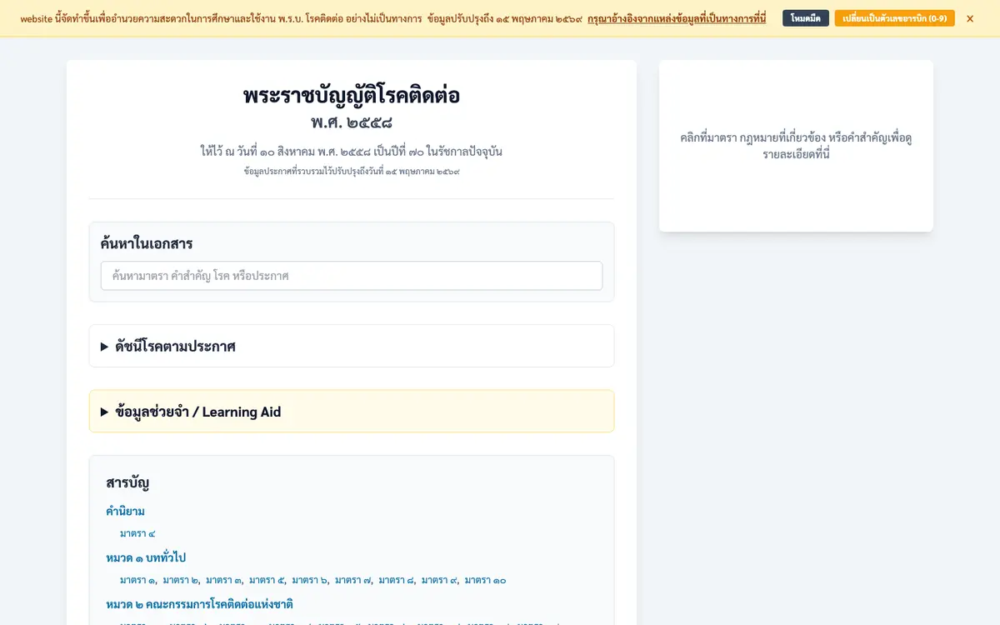
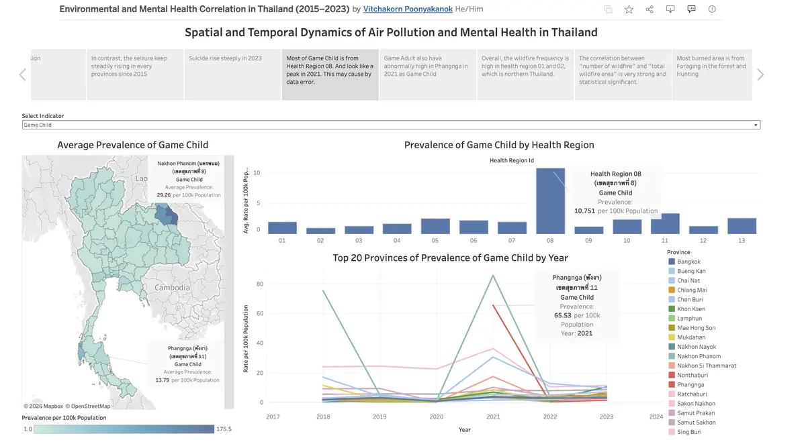
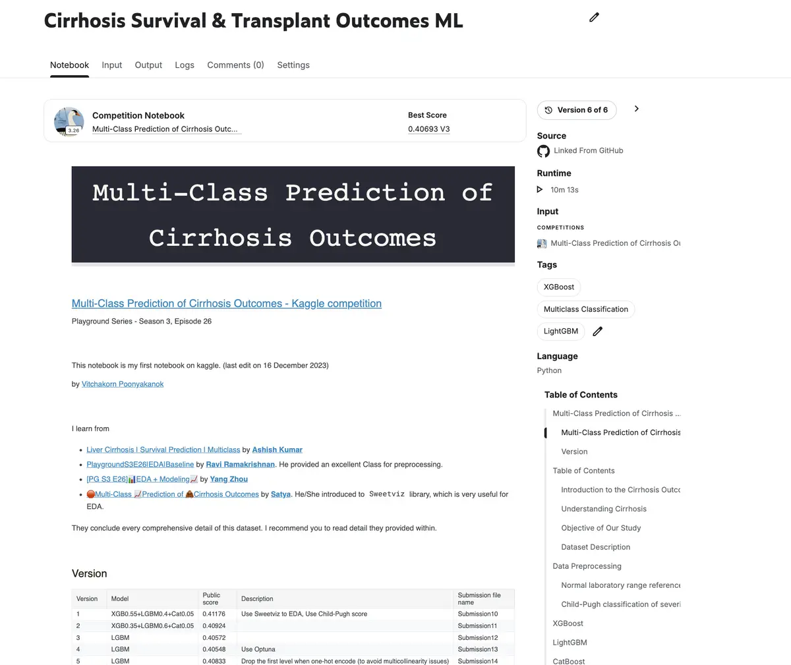
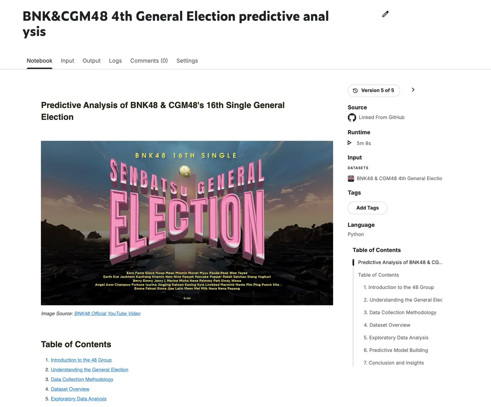
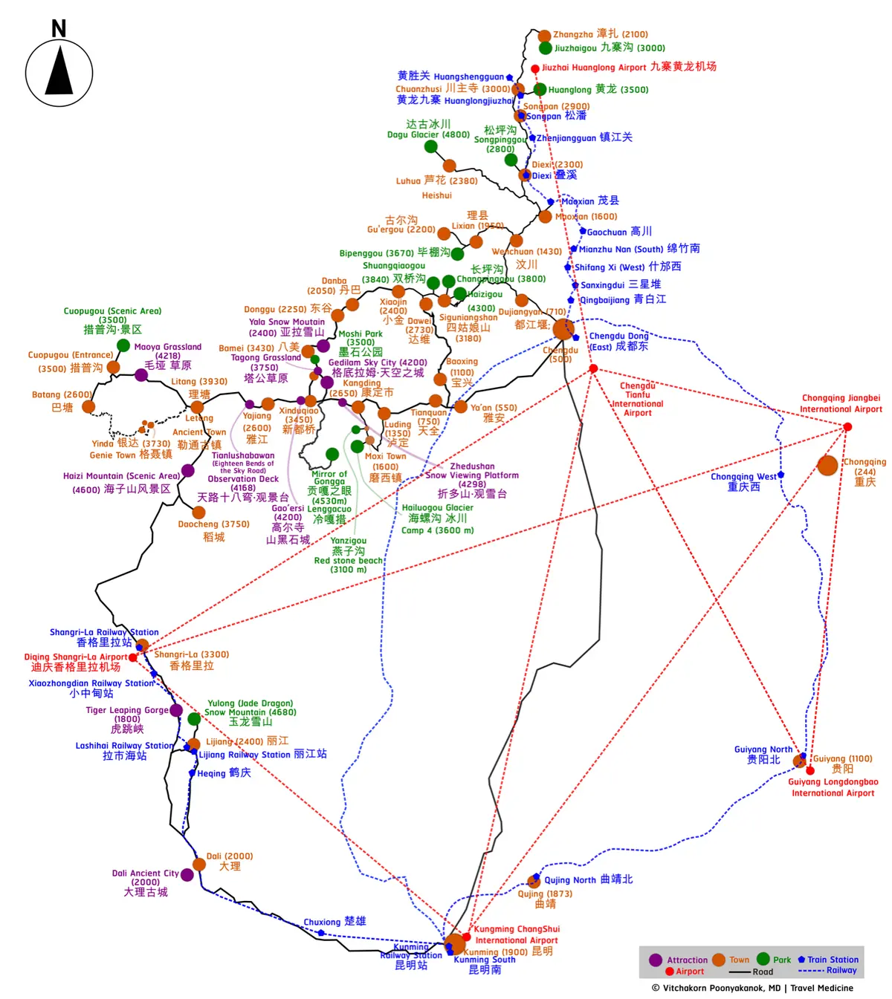
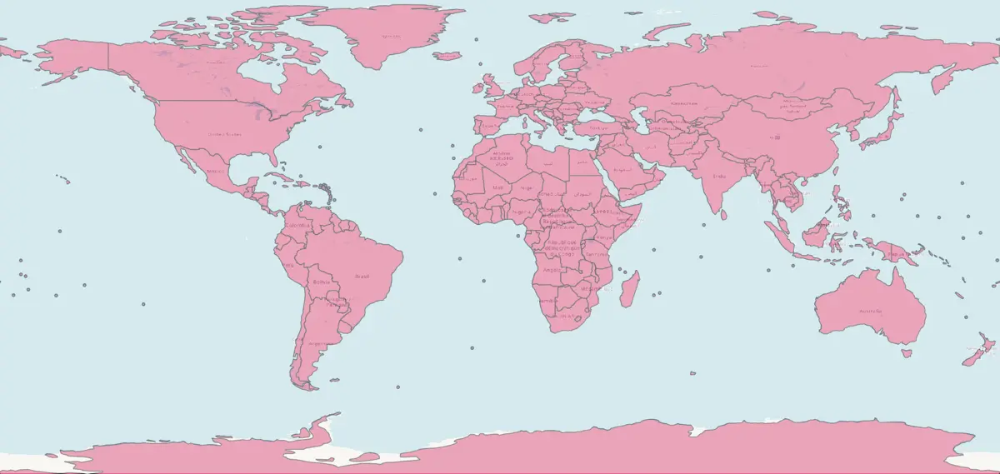

Project Archive
Every project referenced from the Projects section of my portfolio, plus a few smaller builds that don't make the top carousel — deployed apps, dashboards, Kaggle notebooks, GIS/cartography work, and a video explainer. Each has its own case study.

Guardrailed Thai disease-surveillance LLM assistant using tool-calling over a PII-free data mart.

Extracts and analyzes multi-format travel itineraries for high-altitude illness risk.

Geospatial drill-down navigator unifying Thailand's scattered facility and area codes.

Calendar-based counseling tool for menstrual delay/suppression planning around Hajj ritual dates.

Word add-in that permanently converts Arabic to Thai numerals, preserving emails and URLs.

Searchable, numeral-flexible reader for Thailand's Communicable Disease Act B.E. 2558.

One country-clickable map combining vaccine and prophylaxis guidance, with seasonal detail.

Spatial-temporal story on air pollution vs. psychiatric visits using Interrupted Time Series.

Multi-class ensemble model (XGBoost/LightGBM) for cirrhosis survival and transplant outcomes.

First end-to-end ML project, scraping to prediction, forecasting an entertainment-industry election.

One bilingual map combining altitude, attractions, and transit for high-altitude travel consults.

Hand-corrected world shapefile restoring small nations standard basemaps drop.